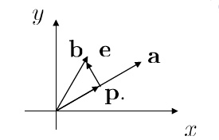

向量投影是线性代数中很重要的应用，用于找到向量到目标投影空间的投影向量。基本子空间中有着更加特殊和精确的关系，由此可以引出向量空间的正交性及投影等问题。这是下一节线性回归的基础。
Ax=b有解时
当计算线性方程组Ax=b 有解时， b就在C(A)的子空间中，则Ax=b在C(AT)中有唯一解。我们考虑x的投影。
设α∈Rn是Ax=b的解，则α=αr+αn,αr∈C(AT),αn∈N(A)。则：
αr 是α 在C(AT)的投影。
αn 是α 在N(A)的投影。
Ax=b无解时
当计算线性方程组 Ax=b 时， 它可能是无解的，此时我们可以考虑求 x^∈Rn，使得|| Ax^−b || 最小或极小？
这就意味着当 b∉C(A) 时，我们需要求解 C(A) 上距离 b 最近的点 Ax^ ， 它就是b 在 C(A) 上的投影点。
这对于我们理解最小二乘法很有帮助，具体请参考下一章。
以三维空间为例，目标投影空间可能是线，也可能是面。
投影的实质就是找一个函数，从而使得 P(B)=b ，也就找到了 B 在某一维度的映射。
类似的，在线性代数中，我们需要找到投影矩阵 P ，使得 Pb∈C(A) 。
投影矩阵 P
投影矩阵 P ，顾名思义，就是利用矩阵 P ，将向量 b 投影到所需的”空间“中，设投影点为 p，则误差向量 e=b−p。

在直线上的投影
求 b 在直线 a 上的投影向量 p.
已知 p+e=b,e⊥a,p=ta(t∈R)
∴e⊥a→aT(b−ta)=0→t=aTaaTb(a≠0)
即 b 在直线 a 上的投影向量为 (aTaaTb)a=p. (a，b表示相应列向量)
投影向量p=(aTaaTb)a=aTaaTa)b
我们称 aTaaTa为投影矩阵 P.
在平面上的投影
给定 v∈R3 ，求 v 在平面 π=C(A) 上的投影 p .
令 α1,α2 是平面 π 上两无关向量，即 π=C(A) 的一组基。
令p=Ax^，则 e=v−Ax^ 垂直于平面 π ，即其属于A 的左零空间。
∴AT(AX^−v)=0， 即 x^ 是 ATAx=ATv 的解。
∵A 的列向量线性无关，即 ATA 是可逆矩阵
∴x^=(ATA)−1ATv→p=A(ATA)−1ATv.
我们称 A(ATA)−1AT 为投影矩阵 P.
一般情形
A 为 m×n 矩阵，设 b∈Rm，求 b 在 C(A) 上的投影 p ?
p∈C(A)⟺∃x^∈Rn,Ax^=p。
∵e=b−p⊥C(A)↔e∈N(AT)
∴ATe=⇒AT(b−Ax^)=0.⟹p=Ax^=A(ATA)−1ATb
这里需要注意一点：ATAx=ATb 总有解（无论 A 是否列满秩）
这是因为C(AT)=C(ATA),ATb∈C(AT)=C(ATA)，所以总能找到这样的 x^ 使得 x^=A(ATA)−1AT。
投影矩阵 P的性质
- 若A 的列向量线性无关（列满秩），则矩阵 ATA 可逆，投影矩阵 P=A(ATA)−1AT 满足
P2=P,PT=P
从直观上，向量 b 经过一次投影到平面A 上后再经过相同的一次投影仍然在平面A 上，因此投影矩阵 P2 和 P 的效果是一样的，因此P2=P 。
数学推理：
P2=(A(ATA)−1AT)(A(ATA)−1AT))=A(ATA)−1(ATA)(ATA)−1AT=A(ATA)−1AT=P
- C(P)=N(I−P),N(P)=C(I−P)
∵P2=P
∴P(I−P)=0⟹C(I−P)⊂N(P)
设 α∈N(P)，则 Pα=0⟹α=(I−P)α
∴α∈C(I−P)⟹N(P)⊂C(I−P)
综上：N(P)=C(I−P)
同理C(P)=N(I−P)